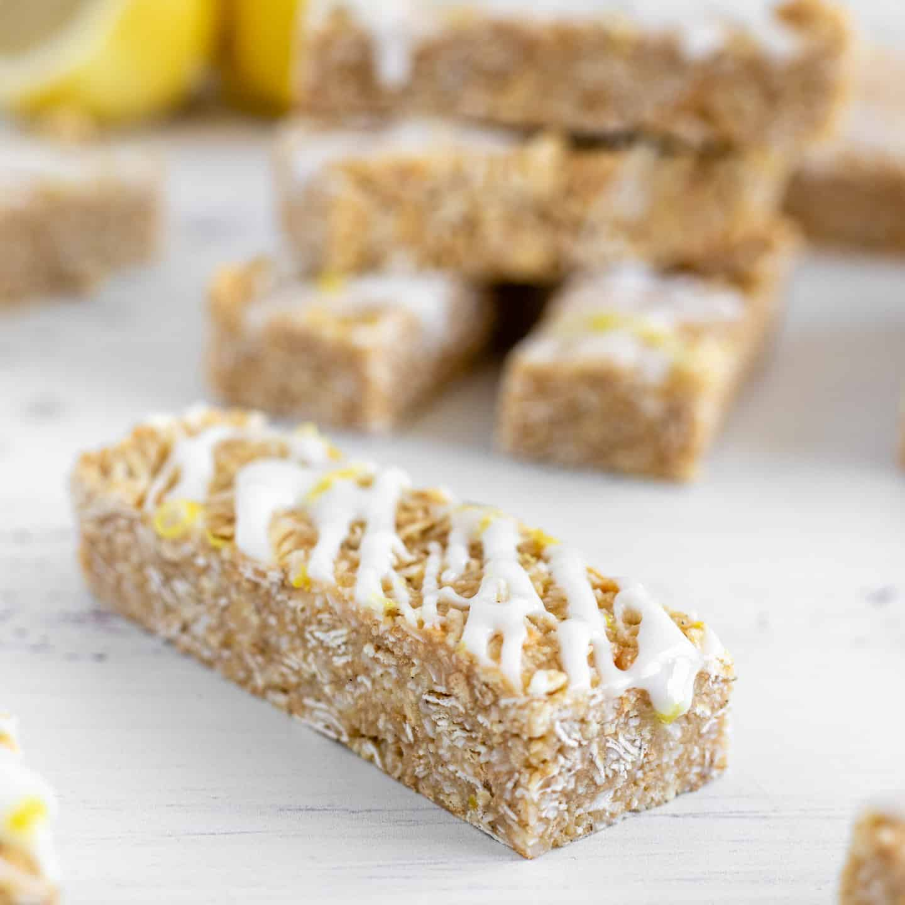
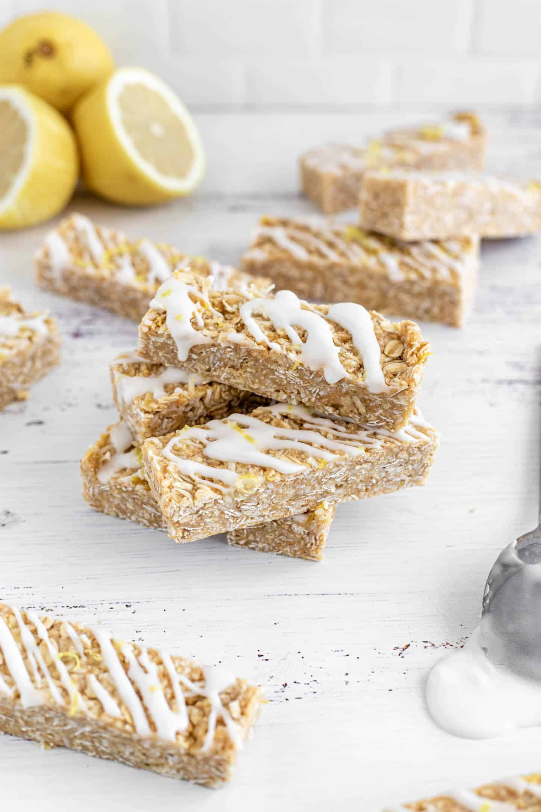

(“Bocado tropical que alegra el día”).
• Porciones: 12 barritas.
• Tiempo: 35 min.
• Dificultad: fácil.
-300 g coco rallado seco.
-200 g leche condensada.
-Ralladura y 2 cucharadas jugo de 1 limón.
-1/2 cdita esencia de vainilla.
-Chocolate derretido para bañar (opcional).
(breve):
1. Mezcla coco, leche condensada, ralladura y jugo hasta obtener masa manejable.
2. Extiende en molde forrado y presiona; refrigera 1 h.
3. Corta en barras y, si quieres, baña la base en chocolate derretido; deja enfriar.
Tips & presentación: combina con una etiqueta bonita si las
regalas.
Foto sugerida: barras alineadas con textura de coco
visible.
“No me conformo con dar de comer: quiero crear emociones” - Joan Roca.
 